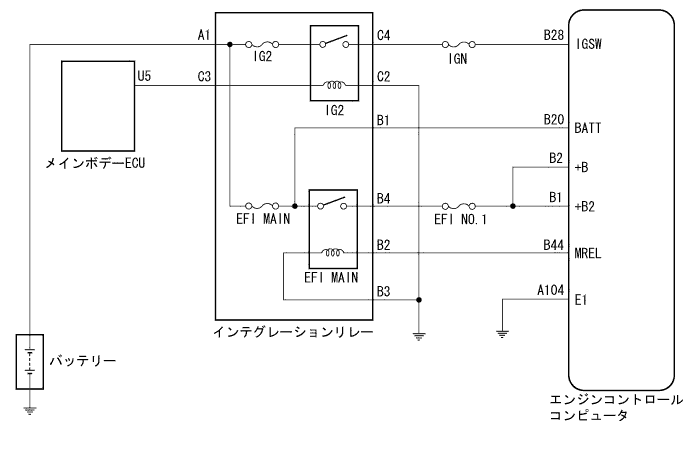
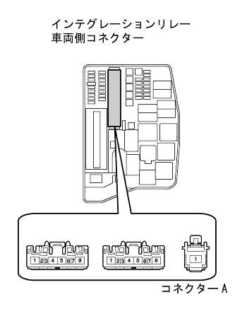
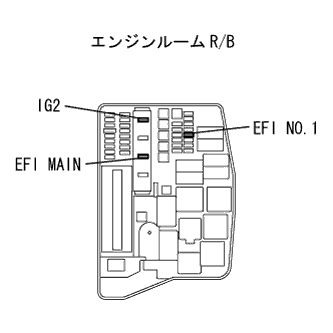
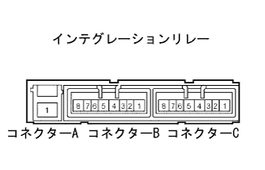
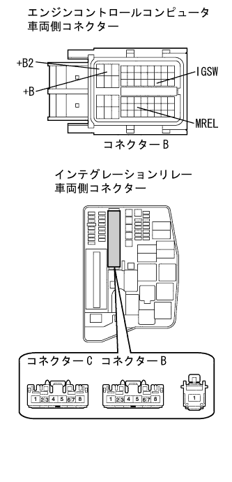
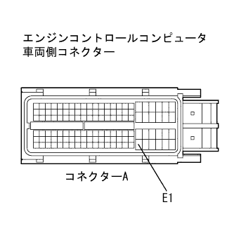
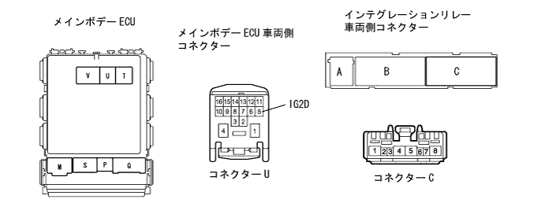

EFI System (2AZ-FE) ECU Power Source System |

| Step 1 | Inspect Integration Relay (Power Source Voltage) |
 |
Remove the integration relay from the engine room R/B.
Using SST (Toyota electrical tester), measure the voltage of the integration relay vehicle side connector terminals.
| Measurement Terminal | Condition | Standard |
|---|---|---|
| A1 - Body ground | Always | 11 to 14 V |
|
| ||||
| OK | |
| Step 2 | Inspect Fuse (EFI MAIN, EFI NO.1, IG2, IGN) |
 |
Remove the EFI MAIN fuse, EFI NO.1 fuse and IG2 fuse from the engine room R/B.
Remove the IGN fuse from the main body ECU.
Using SST (Toyota electrical tester), measure the resistance between the terminals.
| Tester Connection | Condition | Standard |
|---|---|---|
| EFI MAIN fuse | Always | Below 1 Ω |
| EFI NO.1 fuse | Always | Below 1 Ω |
| IG2 Fuse | Always | Below 1 Ω |
| IGN Fuse | Always | Below 1 Ω |
|
| ||||
| OK | |
| Step 3 | Inspect Integration Relay |
 |
Remove the integration relay from the engine room R/B.
Resistance Inspection
Using SST (Toyota electrical tester), measure the resistance between the terminals of the connector.
| Tester Connection | Condition | Standard |
|---|---|---|
| B1 - B4 | Always | 10k Ω or higher |
| A1 - B4 | Always | 10k Ω or higher |
| A1 - C4 | Always | 10k Ω or higher |
IG2 Relay Operation Inspection
Using SST (Toyota electrical tester), measure the resistance between the terminals when battery voltage is applied between terminals C2 - C3.
| Tester Connection | Condition | Standard |
|---|---|---|
| A1 - C4 | Battery Voltage | Below 1 Ω |
EFI MAIN Relay Operation Inspection
Using SST (Toyota electrical tester), measure the resistance between each pair of terminals when battery voltage is applied between terminals B2 - B3.
| Tester Connection | Condition | Standard |
|---|---|---|
| A1 - B4 | Battery Voltage | Below 1 Ω |
| B1 - B4 | Battery Voltage | Below 1 Ω |
|
| ||||
| OK | |
| Step 4 | Inspect Wire Harness and Connector (Engine Control Computer - Integration Relay) |
Reference |
Remove the integration relay from the engine room R/B.
Disconnect connector B of the engine control computer.
Using SST (Toyota electrical tester), measure the resistance between the engine control computer and the integration relay vehicle side connector terminals. (For Terminals of ECU, see)
| Tester Connection (Terminal Name) | Condition | Standard |
|---|---|---|
| B44(MREL) - B2 | Always | Below 1 Ω |
| B2(+B) - B4 | Always | Below 1 Ω |
| B1(+B2) - B4 | Always | Below 1 Ω |
| B28(IGSW) - C3 | Always | Below 1 Ω |
| B44 (MREL) and B2 - Body ground | Always | 10k Ω or higher |
| B2 (+B) and B4 - Body ground | Always | 10k Ω or higher |
| B1 (+B2) and B4 - Body ground | Always | 10k Ω or higher |
| B28 (IGSW) and C3 - Body ground | Always | 10k Ω or higher |
Using SST (Toyota electrical tester), measure the resistance of the integration relay vehicle side connector terminals.
| Tester Connection | Condition | Standard |
|---|---|---|
| B2 - Body ground | Always | Below 1 Ω |
| C2 - Body ground | Always | Below 1 Ω |
| B2 - Other terminals | Always | 10k Ω or higher |
| C2 - Other terminals | Always | 10k Ω or higher |
|
| ||||
| OK | |
| Step 5 | Inspect Wire Harness and Connector (ECU Ground) |
Reference |
Disconnect the battery negative terminal.
Disconnect engine control computer connector A.
Using SST (Toyota electrical tester), measure the resistance of the engine control computer vehicle side connector terminals. (For Terminals of ECU, see)
| Tester Connection (Terminal Name) | Condition | Standard |
|---|---|---|
| A104 (E1) - Body ground | Always | Below 1 Ω |
|
| ||||
| OK | |
| Step 6 | Inspect Wire Harness and Connector (Main Body ECU - Integration Relay) |
ReferenceRemove the integration relay from the engine room R/B.

Disconnect main body ECU connector U.
Using SST (Toyota electrical tester), measure the resistance between the main body ECU and integration relay vehicle side connector terminals.
| Tester Connection (Terminal Name) | Condition | Standard |
|---|---|---|
| U5(IG2D) - C3 | Always | Below 1 Ω |
|
| ||||
| OK | ||
| ||